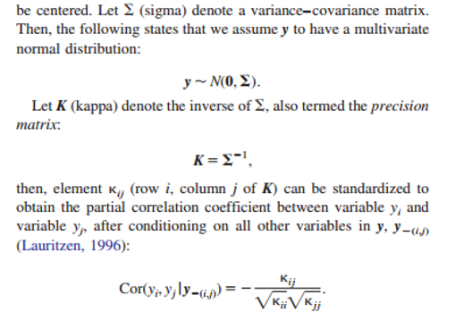
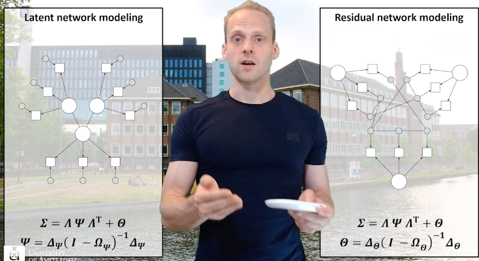
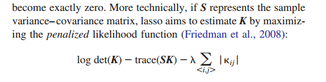
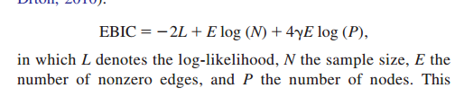

A Tutorial on Regularized Partial Correlation Networks
Epskamp , S., & Fried, E.I. (2018). A Tutorial on Regularized Partial Correlation Networks. Psychological Methods, 23(4), 617-634.
A Tutorial on Regularized Partial Correlation Networks Partial Correlation NetworksRegularizationSelecting the lasso tuning parameter. Non-normal dataEmpirical studyCommon Problems
Partial Correlation Networks
Social networks:
- in which edges are known (Wasserman & Faust, 1994)
Latent variable modeling
- mutual associations among variables VS
- latent variables are thought to explain the correlation among variables
psychological networks can be powerful tools to explore multicollinearity and predictive mediation, and can even be used to highlight the presence of latent variables.
Partial Correlation Networks
can also be called as concentration graphs (Cox & Wermuth, 1994) or Gaussian graphical models (Lauritzen, 1996)
Method 1

Method 2

- allow one to model unique interactions between variables.
- maps out multicollinearity and predictive mediation.
- exploratory hypothesis-generating structures, indicative of potential causal effects.
- clusters in the network may highlight latent variables
VS LVM
these models are not easily identified or parameterized: Many equivalent directed models can fit the data equally well
To overcome induced edges from latent variables, one can estimate a network structure after taking covariation due to one or more common causes into account (termed a residual network; Chandrasekaran et al., 2012; Chen, Li, Liu, & Ying, 2016; Epskamp, Rhemtulla et al., 2017; Pan, Ip, & Dube, 2017)
Another way of combining network models with latent variable models is to use latent variables as nodes in a network (termed a latent network; Epskamp, Rhemtulla et al., 2017).

Regularization
Regularization jointly performs model-selection and parameter estimation.
Estimating parameters from data always comes with sampling variation, leading to estimates that are never exactly zero.
One way to solve this problem is to test all partial correlations for statistical significance and remove all edges that fail to reach significance (Drton & Perlman, 2004).
However, this poses a problem of multiple testing, and correcting for this problem (e.g., by using a Bonferroni correction) results in a loss of power (Costantini, Epskamp et al., 2015).
Graphical lasso (glasso package, implemented in qgraph, can be called via bootnet)

lasso regularization can also be applied on the individual regression models if a network is estimated using node-wise regressions (Meinshausen & Bühlmann, 2006).
Selecting the lasso tuning parameter.
estimate a collection of networks rather than a single network, ranging from a fully connected network to a fully disconnected network.
Minimizing the Extended Bayesian Information Criterion (EBIC; Chen & Chen, 2008)

Choosing the EBIC hyperparameter
Typically is set between 0(BIC) - 0.5 (Foygel & Drton, 2010)
Model Selection Example: Code and Results of the toy simulation study
Non-normal data
Continuous data
- Nonparanormal transformation (Liu et al., 2009)
Ordered categories
- Threshold functions (Muthén, 1984)
Binary
- tetrachoric and biserial correlations (special cases of polychoric and polyserial correlations, respectively)
- these data would not be best handled using partial correlation networks because of the underlying assumption of normality.
- Ising model
Empirical study
includes
(a) model estimation
(b) a priori sample size analysis
(c) post hoc accuracy and stability analysis.
Common Problems
The estimated network has no or very few edges.
- This can occur in the unlikely case when variables of interest do not exhibit (partial) correlations. More likely, it occurs when the sample size is too low for the number of nodes in the network.
- Increase the sample size / decrease the number of variables
The network is densely connected (i.e., many edges) including many unexpected negative edges and many implausibly high partial correlations (e.g., higher than 0.8).
- These structures can occur when the correlation matrix used as input is not positive definite, which can occur when a sample is too small, or when estimating polychoric correlations.
- compare networks based on polychoric correlations with networks based on Spearman correlations (they should look somewhat similar) to determine if the estimation of polychoric correlations is the source of this problem.
While in general the graph looks as expected (i.e., relatively sparse), some edges are extremely high and/or unexpectedly extremely negative.
- Low sample size -- Low frequencies can thus lead to biased polychoric correlations
- Another situation in which one might obtain low frequencies is when the scores are highly skewed
A network has negative edges where the researcher would expect positive ones.
- This can occur when one conditions on a common effect (Pearl, 2000).
Comparing Networks
- compare two different groups of people
- The answer depends on the differences in sample size.
- The EBIC is a function of the sample size: The lower the sample size, the more parsimonious the network structure.
- One option is to perform a permutation test (Van Borkulo et al., 2017)
- R package NetworkComparisonTest